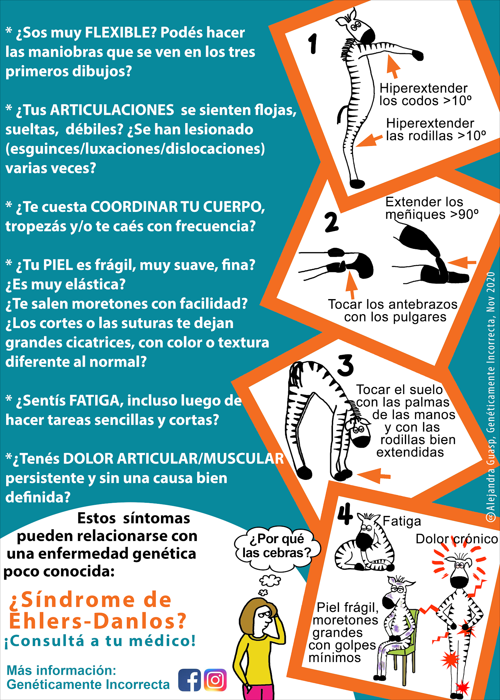

¿Qué es el Síndrome de Ehlers-Danlos Hipermóvil? ¿Por qué es una problemática?
Es un trastorno hereditario del tejido conectivo que se caracteriza por la hiperlaxitud articular, la elasticidad de la piel y la fragilidad de los tejidos. Aunque a menudo se trata de manera aislada, el SEDh puede tener implicaciones más amplias, afectando no solo las articulaciones, sino también otros sistemas del cuerpo debido a la alteración en la producción de colágeno.
¿Qué es la Hiperlaxitud?
La hiperlaxitud es la capacidad de las articulaciones para moverse más allá de su rango normal. En el contexto del SEDh, esta hiperlaxitud es el resultado de defectos en el colágeno, que es crucial para la integridad de los tejidos conectivos. La medición de la hiperlaxitud, a menudo realizada a través del test de Beighton, ayuda a identificar a los pacientes en riesgo de desarrollar síntomas más severos asociados con el SEDh.
¿Es necesario cumplir con todos los puntos de hiperlaxitud?
No es necesario cumplir con todos los criterios de hiperlaxitud extrema.
Síndrome de Ehlers-Danlos Hipermóvil (SEDh)
El SEDh se caracteriza por una serie de síntomas que incluyen dolor crónico, dislocaciones frecuentes, y una piel que puede ser inusualmente elástica. Sin embargo, los efectos del SEDh van más allá de estos síntomas, ya que la alteración en la producción de colágeno afecta a todos los tejidos conectivos del cuerpo. Esto puede dar lugar a otras condiciones que a menudo se tratan de manera aislada, como problemas gastrointestinales, cardiovasculares y musculoesqueléticos, lo que complica aún más el manejo de la enfermedad.
- Historia Familiar: La presencia de hiperlaxitud o SEDh en la familia puede ser un factor.
- Síntomas Asociados: Incluyen dolor crónico, luxaciones articulares frecuentes, piel suave y elástica, y problemas de cicatrización.
- Evaluación Clínica: Un reumatólogo o genetista puede evaluar los síntomas y la historia clínica para hacer un diagnóstico.
Test para Evaluar Posible Hiperlaxitud y SEDh
Enfermedades Comórbidas
- Síndrome de POTS (Taquicardia Ortostática Postural)
- Disautonomía
- Trastornos Gastrointestinales
- Dolor Crónico
- Fatiga Crónica
¿Qué Hacer?
- Consultar a un médico especializado en genética o reumatología.
- Seguir un plan de tratamiento que puede incluir fisioterapia, medicamentos para el dolor y manejo de los síntomas asociados.
- Informarse y conectarse con grupos de apoyo para personas con SEDh.